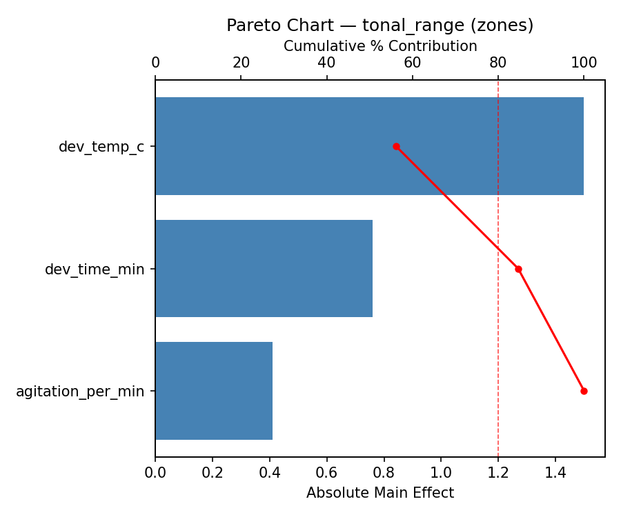
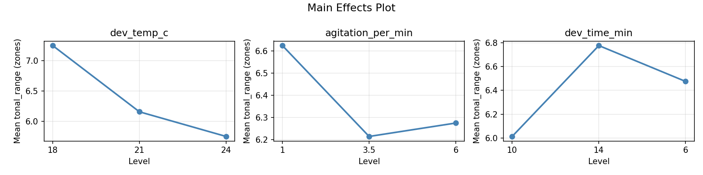
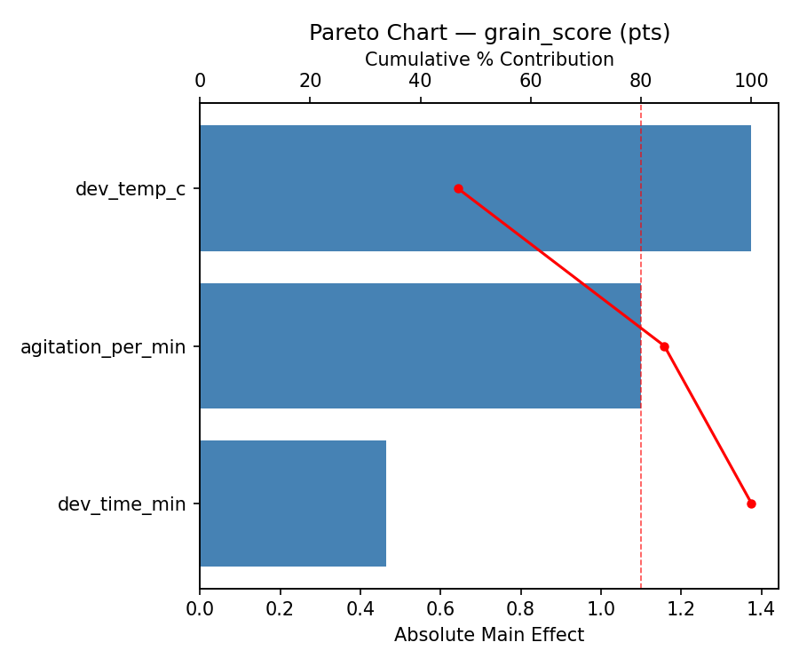
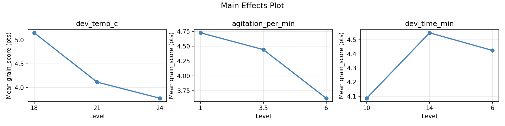
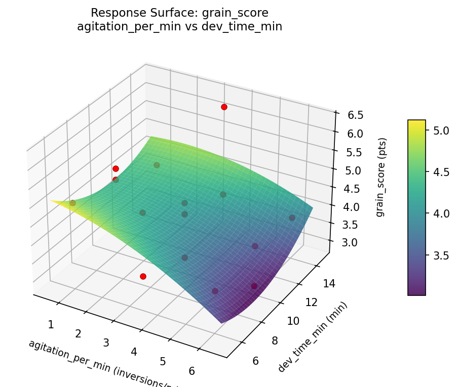
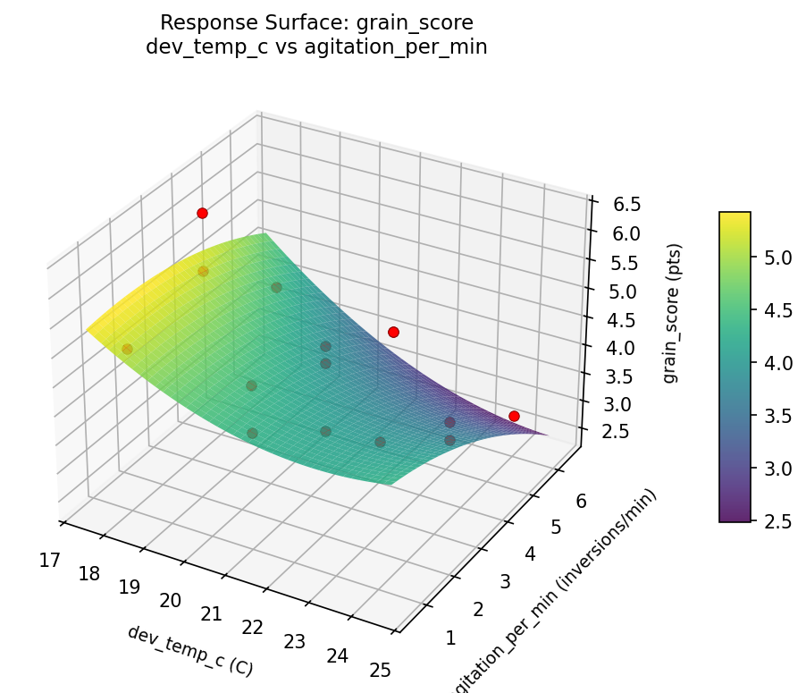
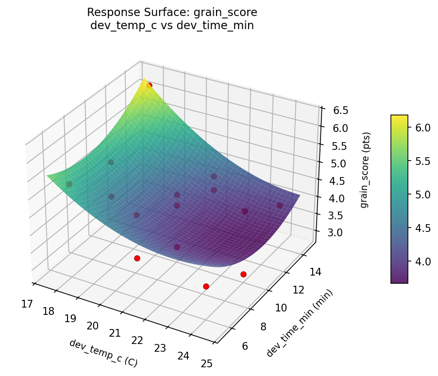
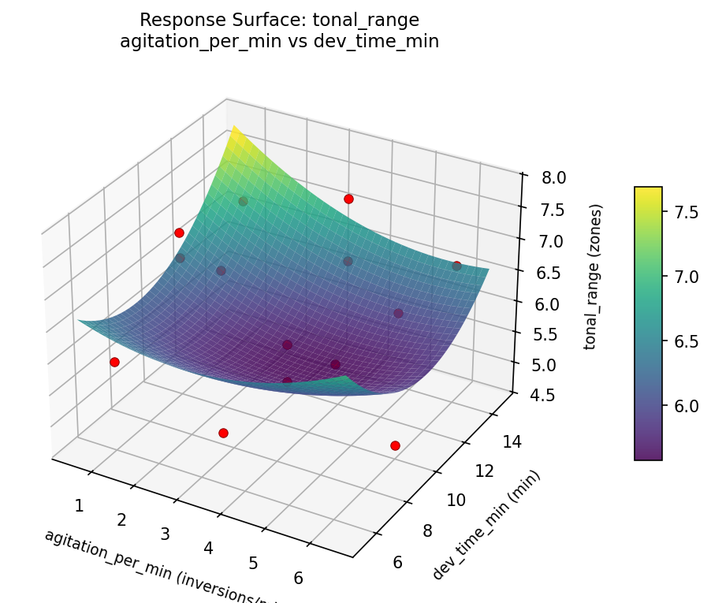
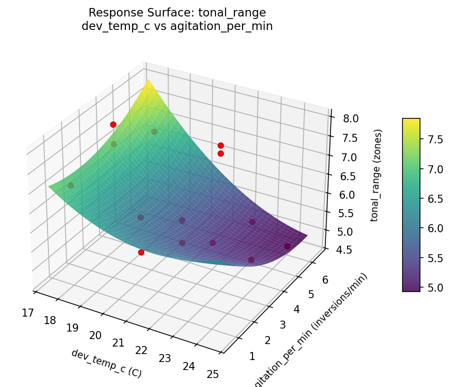
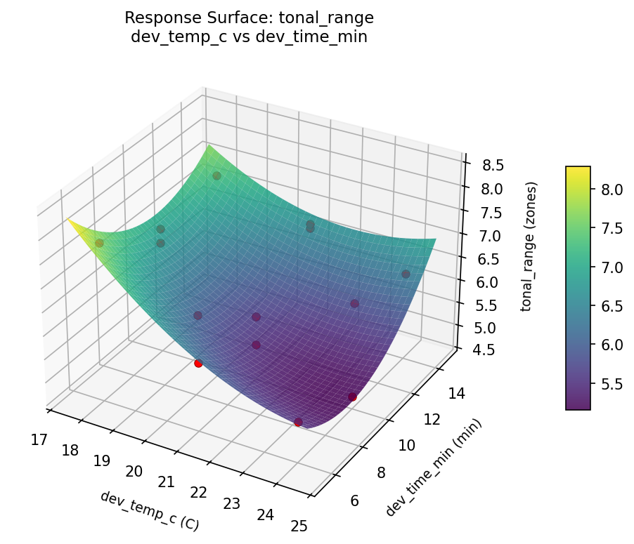

Experimental Setup
Factors
| Factor | Low | High | Unit |
|---|
dev_temp_c | 18 | 24 | C |
agitation_per_min | 1 | 6 | inversions/min |
dev_time_min | 6 | 14 | min |
Fixed: film_type = ilford_hp5, developer = rodinal
Responses
| Response | Direction | Unit |
|---|
tonal_range | ↑ maximize | zones |
grain_score | ↓ minimize | pts |
Configuration
{
"metadata": {
"name": "Film Development Process",
"description": "Box-Behnken design to maximize tonal range and minimize grain by tuning developer temperature, agitation frequency, and development time"
},
"factors": [
{
"name": "dev_temp_c",
"levels": [
"18",
"24"
],
"type": "continuous",
"unit": "C"
},
{
"name": "agitation_per_min",
"levels": [
"1",
"6"
],
"type": "continuous",
"unit": "inversions/min"
},
{
"name": "dev_time_min",
"levels": [
"6",
"14"
],
"type": "continuous",
"unit": "min"
}
],
"fixed_factors": {
"film_type": "ilford_hp5",
"developer": "rodinal"
},
"responses": [
{
"name": "tonal_range",
"optimize": "maximize",
"unit": "zones"
},
{
"name": "grain_score",
"optimize": "minimize",
"unit": "pts"
}
],
"settings": {
"operation": "box_behnken",
"test_script": "use_cases/152_film_development/sim.sh"
}
}
Experimental Matrix
The Box-Behnken Design produces 15 runs. Each row is one experiment with specific factor settings.
| Run | dev_temp_c | agitation_per_min | dev_time_min |
|---|
| 1 | 21 | 1 | 6 |
| 2 | 21 | 3.5 | 10 |
| 3 | 24 | 3.5 | 14 |
| 4 | 24 | 3.5 | 6 |
| 5 | 21 | 3.5 | 10 |
| 6 | 21 | 3.5 | 10 |
| 7 | 18 | 3.5 | 14 |
| 8 | 24 | 1 | 10 |
| 9 | 21 | 1 | 14 |
| 10 | 24 | 6 | 10 |
| 11 | 18 | 3.5 | 6 |
| 12 | 21 | 6 | 14 |
| 13 | 18 | 1 | 10 |
| 14 | 18 | 6 | 10 |
| 15 | 21 | 6 | 6 |
Step-by-Step Workflow
1
Preview the design
$ python doe.py info --config use_cases/152_film_development/config.json
2
Generate the runner script
$ python doe.py generate --config use_cases/152_film_development/config.json \
--output use_cases/152_film_development/results/run.sh --seed 42
3
Execute the experiments
$ bash use_cases/152_film_development/results/run.sh
4
Analyze results
$ python doe.py analyze --config use_cases/152_film_development/config.json
5
Get optimization recommendations
$ python doe.py optimize --config use_cases/152_film_development/config.json
6
Generate the HTML report
$ python doe.py report --config use_cases/152_film_development/config.json \
--output use_cases/152_film_development/results/report.html
Features Exercised
| Feature | Value |
|---|
| Design type | box_behnken |
| Factor types | continuous (all 3) |
| Arg style | double-dash |
| Responses | 2 (tonal_range ↑, grain_score ↓) |
| Total runs | 15 |
Analysis Results
Generated from actual experiment runs using the DOE Helper Tool.
Response: tonal_range
Top factors: dev_temp_c (56.1%), dev_time_min (28.5%), agitation_per_min (15.4%).
Pareto Chart

Main Effects Plot

Response: grain_score
Top factors: dev_temp_c (46.8%), agitation_per_min (37.4%), dev_time_min (15.8%).
Pareto Chart

Main Effects Plot

Response Surface Plots
3D surfaces fitted with quadratic RSM. Red dots are observed data points.
grain score agitation per min vs dev time min

grain score dev temp c vs agitation per min

grain score dev temp c vs dev time min

tonal range agitation per min vs dev time min

tonal range dev temp c vs agitation per min

tonal range dev temp c vs dev time min

Full Analysis Output
RSM surface: rsm_tonal_range_dev_temp_c_vs_agitation_per_min.png
RSM surface: rsm_tonal_range_dev_temp_c_vs_dev_time_min.png
RSM surface: rsm_tonal_range_agitation_per_min_vs_dev_time_min.png
RSM surface: rsm_grain_score_dev_temp_c_vs_agitation_per_min.png
RSM surface: rsm_grain_score_dev_temp_c_vs_dev_time_min.png
RSM surface: rsm_grain_score_agitation_per_min_vs_dev_time_min.png
=== Main Effects: tonal_range ===
Factor Effect Std Error % Contribution
--------------------------------------------------------------
dev_temp_c 1.5000 0.2234 56.1%
dev_time_min 0.7607 0.2234 28.5%
agitation_per_min 0.4107 0.2234 15.4%
=== Summary Statistics: tonal_range ===
dev_temp_c:
Level N Mean Std Min Max
------------------------------------------------------------
18 4 7.2500 0.4203 6.8000 7.8000
21 7 6.1571 0.6451 5.2000 6.9000
24 4 5.7500 0.9147 4.7000 6.7000
agitation_per_min:
Level N Mean Std Min Max
------------------------------------------------------------
1 4 6.6250 0.5123 5.9000 7.1000
3.5 7 6.2143 0.9924 5.2000 7.8000
6 4 6.2750 1.0532 4.7000 6.9000
dev_time_min:
Level N Mean Std Min Max
------------------------------------------------------------
10 7 6.0143 0.8896 4.7000 7.1000
14 4 6.7750 0.4113 6.3000 7.3000
6 4 6.4750 1.1026 5.3000 7.8000
=== Main Effects: grain_score ===
Factor Effect Std Error % Contribution
--------------------------------------------------------------
dev_temp_c 1.3750 0.2276 46.8%
agitation_per_min 1.1000 0.2276 37.4%
dev_time_min 0.4643 0.2276 15.8%
=== Summary Statistics: grain_score ===
dev_temp_c:
Level N Mean Std Min Max
------------------------------------------------------------
18 4 5.1500 0.9469 4.0000 6.3000
21 7 4.1143 0.6176 3.1000 5.0000
24 4 3.7750 0.7455 2.9000 4.7000
agitation_per_min:
Level N Mean Std Min Max
------------------------------------------------------------
1 4 4.7250 0.3775 4.2000 5.0000
3.5 7 4.4429 1.0830 3.1000 6.3000
6 4 3.6250 0.4924 2.9000 4.0000
dev_time_min:
Level N Mean Std Min Max
------------------------------------------------------------
10 7 4.0857 0.8071 2.9000 5.0000
14 4 4.5500 1.1790 3.8000 6.3000
6 4 4.4250 0.8500 3.6000 5.3000
Pareto chart (tonal_range): use_cases/152_film_development/results/analysis/pareto_tonal_range.png
Pareto chart (grain_score): use_cases/152_film_development/results/analysis/pareto_grain_score.png
Main effects (tonal_range): use_cases/152_film_development/results/analysis/main_effects_tonal_range.png
Main effects (grain_score): use_cases/152_film_development/results/analysis/main_effects_grain_score.png
Optimization Recommendations
=== Optimization: tonal_range ===
Direction: maximize
Best observed run: #3
dev_temp_c = 18
agitation_per_min = 3.5
dev_time_min = 6
Value: 7.8
RSM Model (linear, R² = 0.2604, Adj R² = 0.0586):
Coefficients:
intercept +6.3400
dev_temp_c -0.0750
agitation_per_min -0.1375
dev_time_min -0.5625
RSM Model (quadratic, R² = 0.8335, Adj R² = 0.5338):
Coefficients:
intercept +5.7333
dev_temp_c -0.0750
agitation_per_min -0.1375
dev_time_min -0.5625
dev_temp_c*agitation_per_min -0.2500
dev_temp_c*dev_time_min +0.3500
agitation_per_min*dev_time_min -0.7250
dev_temp_c^2 +0.8958
agitation_per_min^2 -0.0292
dev_time_min^2 +0.2708
Curvature analysis:
dev_temp_c coef=+0.8958 convex (has a minimum)
dev_time_min coef=+0.2708 convex (has a minimum)
agitation_per_min coef=-0.0292 negligible curvature
Notable interactions:
agitation_per_min*dev_time_min coef=-0.7250 (antagonistic)
dev_temp_c*dev_time_min coef=+0.3500 (synergistic)
Predicted optimum (from quadratic model):
dev_temp_c = 18
agitation_per_min = 3.5
dev_time_min = 6
Predicted value: 7.8875
Model quality: Good fit — general trends are captured, some noise remains.
Factor importance:
1. dev_time_min (effect: 1.1, contribution: 47.8%)
2. dev_temp_c (effect: 1.0, contribution: 40.5%)
3. agitation_per_min (effect: 0.3, contribution: 11.7%)
=== Optimization: grain_score ===
Direction: minimize
Best observed run: #11
dev_temp_c = 21
agitation_per_min = 6
dev_time_min = 14
Value: 2.9
RSM Model (linear, R² = 0.4818, Adj R² = 0.3405):
Coefficients:
intercept +4.3000
dev_temp_c +0.1875
agitation_per_min +0.0000
dev_time_min -0.7875
RSM Model (quadratic, R² = 0.8518, Adj R² = 0.5850):
Coefficients:
intercept +3.8000
dev_temp_c +0.1875
agitation_per_min -0.0000
dev_time_min -0.7875
dev_temp_c*agitation_per_min +0.3500
dev_temp_c*dev_time_min -0.3750
agitation_per_min*dev_time_min -0.3500
dev_temp_c^2 +0.6375
agitation_per_min^2 -0.1875
dev_time_min^2 +0.4875
Curvature analysis:
dev_temp_c coef=+0.6375 convex (has a minimum)
dev_time_min coef=+0.4875 convex (has a minimum)
agitation_per_min coef=-0.1875 concave (has a maximum)
Notable interactions:
dev_temp_c*dev_time_min coef=-0.3750 (antagonistic)
dev_temp_c*agitation_per_min coef=+0.3500 (synergistic)
agitation_per_min*dev_time_min coef=-0.3500 (antagonistic)
Predicted optimum (from quadratic model):
dev_temp_c = 24
agitation_per_min = 3.5
dev_time_min = 6
Predicted value: 6.2750
Model quality: Good fit — general trends are captured, some noise remains.
Factor importance:
1. dev_time_min (effect: 1.6, contribution: 59.5%)
2. dev_temp_c (effect: 0.8, contribution: 30.4%)
3. agitation_per_min (effect: 0.3, contribution: 10.1%)